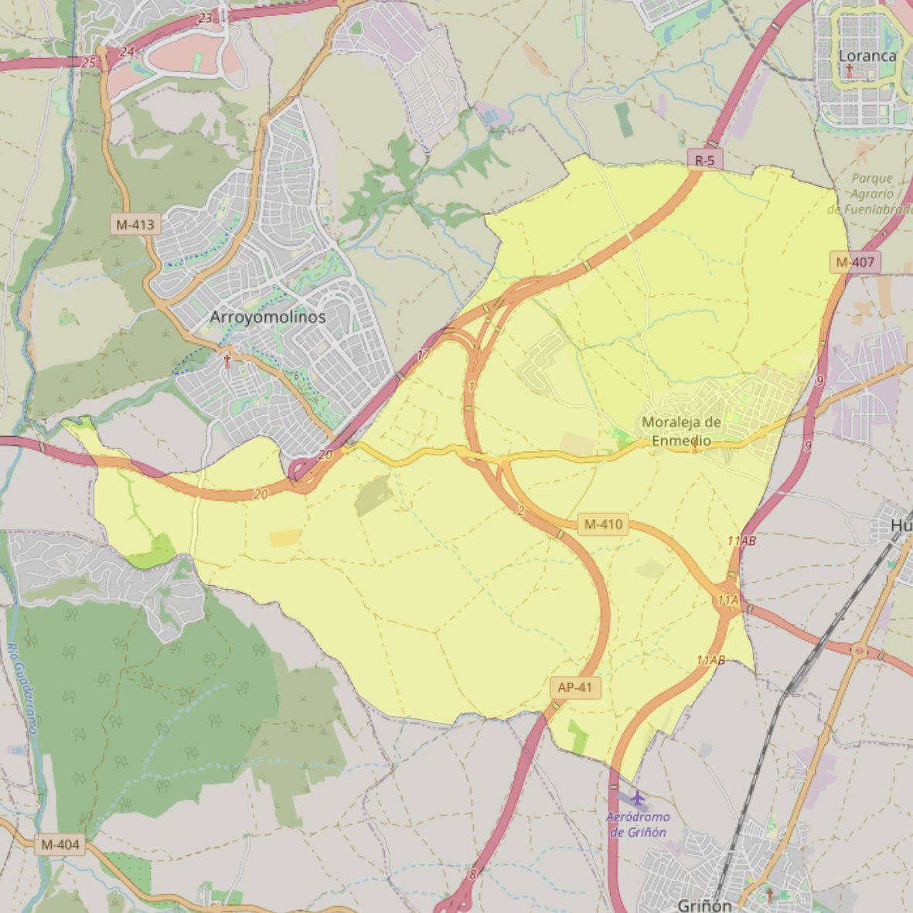

San Millán

- Arciprestazgo
- Griñón
- Población
- Moraleja de Enmedio
- Dirección postal
- Pza. 18 de Julio, 2
- Código postal
- 28950
- Extensión
- 31,05 km² (3.105 ha)
- Teléfono
- 916 485 971
- Correo electrónico
- contacto@smmoraleja.com
Arciprestazgos y parroquias de la Diócesis de Getafe
